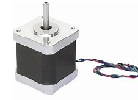

Stappenmotor© 2018, ProtoIt Platform: ARDUINO |  |
Beschrijving:
Er bestaan twee soorten stappenmotoren: unipolaire en bipolaire. Unipolaire motoren hebben meestal 5 of 6 draden.
Bipolaire motoren hebben er 4. Beide types worden ondersteund. De unipolaire motor wordt rechtstreeks aangestuurd en
de bipolaire alleen via een driver (een H-brug volstaat dus niet.)
Er bestaan veel drivers voor stappenmotoren. Alleen het type A4988 (of compatibel ermee) is
geschikt om met deze tegel samen te werken. Soms wordt de ULN2003 wel een driver voor unipolaire motoren genoemd,
maar deze chip is niet meer dan een stroomversterker. De aansturing verandert er niet door en dit wordt eveneens ondersteund.
De draden van een stappenmotor mogen nooit rechtstreeks op de Arduino worden aangesloten. Dan gaat de Arduino stuk.
Bij een unipolaire motor worden de aansluitdraden in 1, in 2, in 3 en in 4 genoemd.
De aansluitingen op de A4988 heten step, direction en enable.
Onderdelen:
Stappenmotor
Instellingen:
| Type (UNI of A4988) | Vul hier het type aandrijving in: "UNI" voor een unipolaire motor die direct met een stroomversterker wordt aangestuurd. "A4988" voor een bipolaire motor die via de driver A4988 (of compatibel) wordt aangestuurd. |
| In1 of Step | UNI: GPIO-pin waarop een draad van één van de spoelen wordt aangesloten. A4988: GPIO-pin waarop de step-ingang van de A4988-driver is aangesloten. |
| In2 of Dir | UNI: GPIO-pin waarop de andere draad van die spoel wordt aangesloten. A4988: GPIO-pin waarop de dir-ingang van de A4988-driver is aangesloten. |
| In3 of Enable | UNI: GPIO-pin waarop een draad van de andere spoel wordt aangesloten. A4988: GPIO-pin waarop de enable-ingang van de A4988-driver is aangesloten. |
| In4 | UNI: GPIO-pin waarop de andere draad van die spoel wordt aangesloten. A4988: Niet aangesloten. |
| Stappen/ronde | Aantal stappen die nodig zijn om een volledig rondje te draaien. |
| Min. vertr. (mics) | Minimale vertraging in microseconden die nodig is om de motor te laten draaien. |
| Draaihoek (°) | De hoek die de motor moet draaien. |
| Aantal stappen | Het aantal stappen dat de motor moet draaien. |
| Snelheid (%) | Vul een percentage van de maximum snelheid in. |
| Richting | Vul hier één van de Constante signalen voor de richting in: Vooruit, Achteruit of Stop. |
| Start wanneer? | Sleep een constant of uitgezonden signaal hiernaar toe. Standaard op het signaal Direct ingesteld |
| Stop wanneer? | Sleep een constant of uitgezonden signaal hiernaar toe. Standaard op Nooit ingesteld. |
| Klaar | Dit signaal wordt uitgezonden als de stappenmotor het ingestelde aantal stappen heeft gedraaid. |